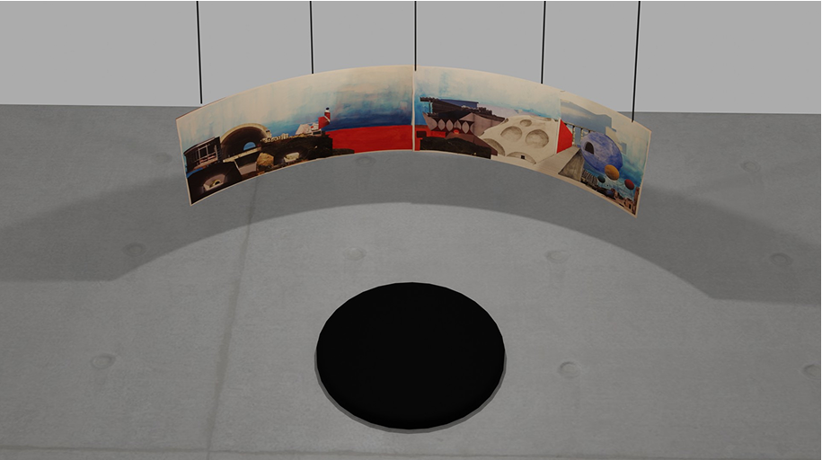
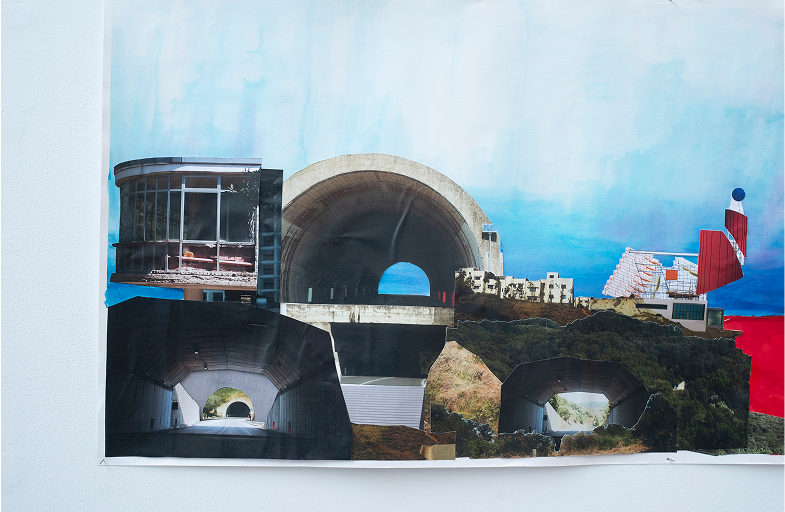

Panorama : de l’image à l’espace
réflexion sur la ville unitaire inspirée du situationnisme de Guy Debord
modélisation Blender, photomontage Photoshop, collage, encre, 210x50 cm


réflexion sur la ville unitaire inspirée du situationnisme de Guy Debord
modélisation Blender, photomontage Photoshop, collage, encre, 210x50 cm